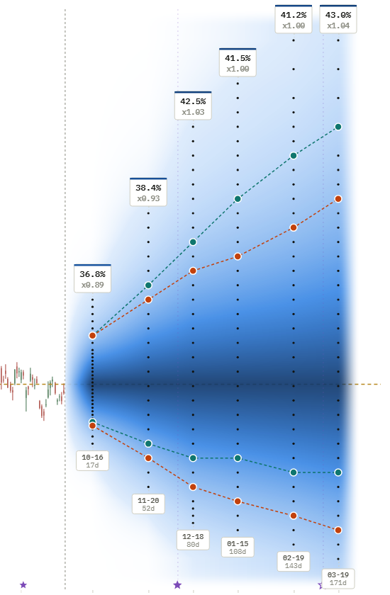
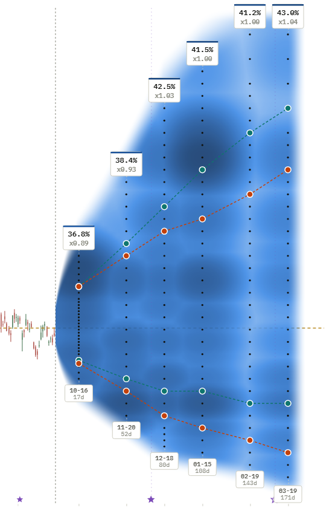
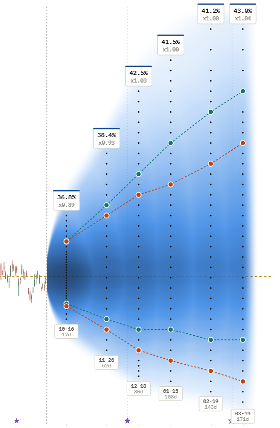
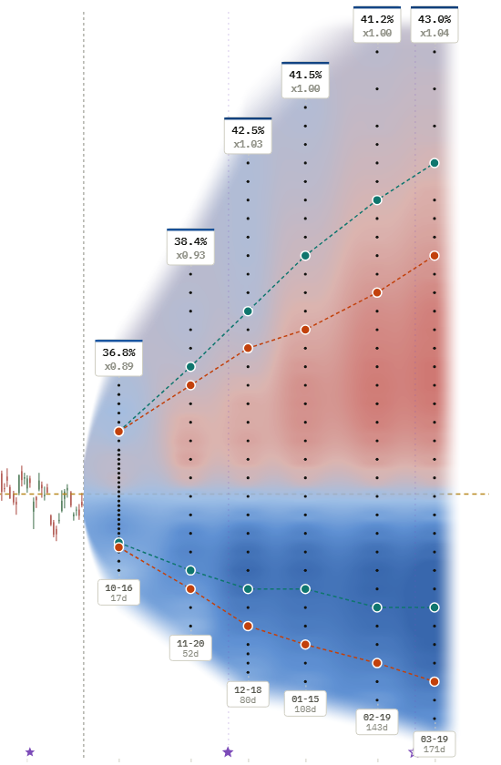
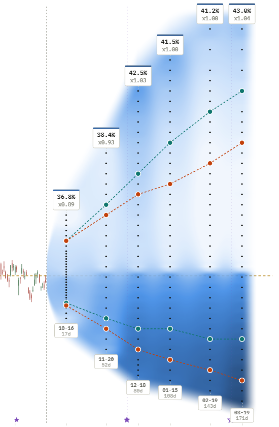
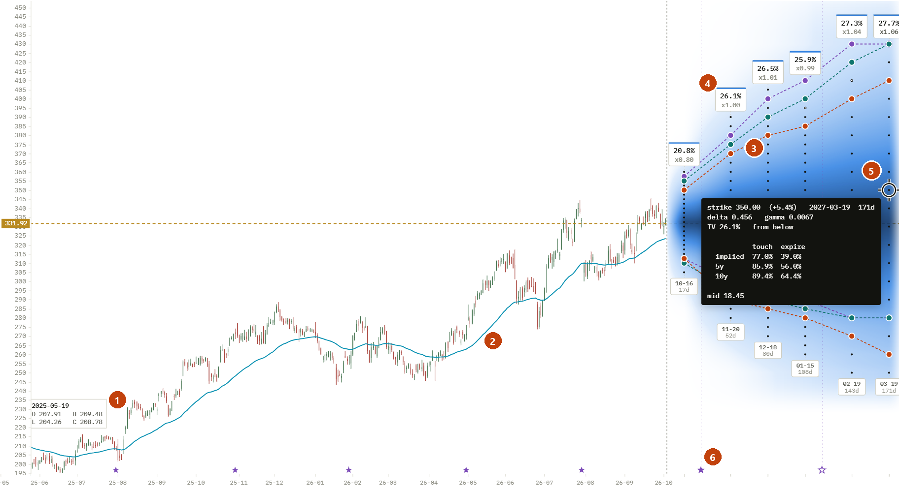
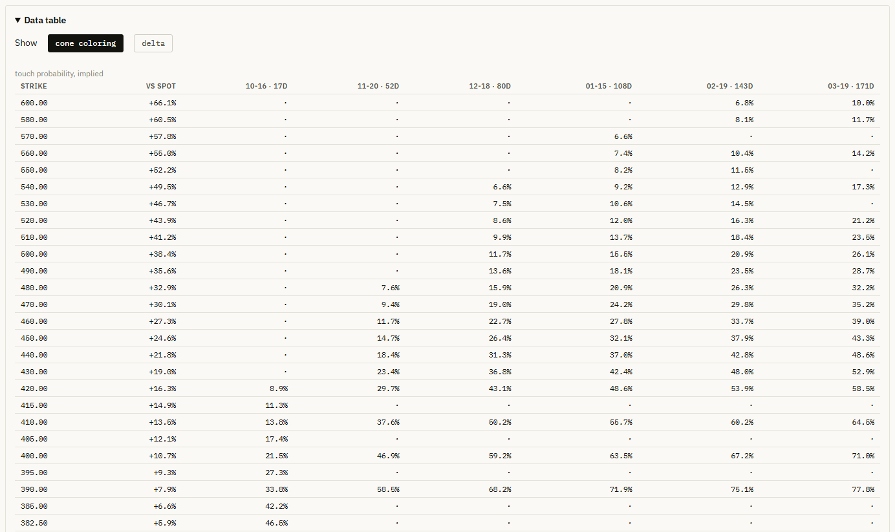
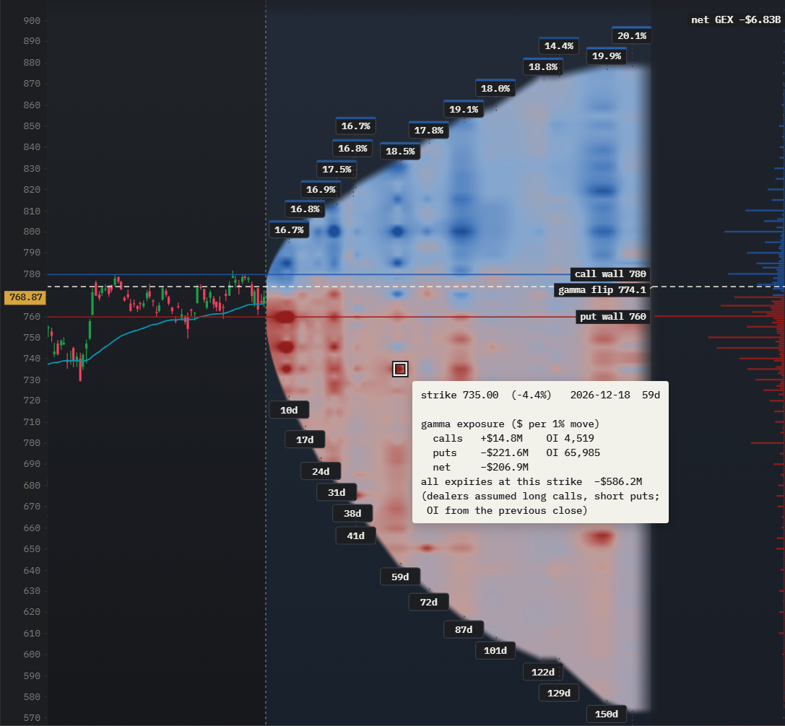

Probability, premium and positioning heatmaps for any stock with options.
OptionsCone turns the option chain into heatmaps on the price chart: touch and expiry probabilities, implied volatility, open interest, spreads, time value and premium relative to risk. It compares what the option market implies with what the stock's own history says. For option traders and for anyone who holds stocks. Free, for Windows.











What you see
Option chain heatmaps on the price chart
The cone
Every dot is a listed contract. The color behind it is the probability that the price touches that strike before that expiry: dark near the money, fading to pale where a touch becomes unlikely. The cone widens with time because the price has longer to travel.
Three models
Implied from the option prices, with each contract's own volatility.
5y and 10y: the Realized Odds, from industry-standard probability models built on the stock's realized moves of the last five and ten years. Pro
Contour lines
Pick a probability and each model draws a line through the listed strikes that match it at every expiry, above and below spot. Where the lines separate, the market and the stock's realized moves disagree.


- Candle readout. Open, high, low and close of the day under the pointer.
- Price chart tools. Two moving averages, trend and horizontal lines, daily or weekly candles, ten years of history.
- Contour lines. The strikes that match your chosen probability at every expiry, one line per model.
- Expiry badges. The implied volatility of each expiry, and how it compares with the stock's realized volatility.
- Selected contract. Click a dot and its tooltip stays open: delta, gamma, implied volatility, touch and expire probabilities from the option market and from the last 5 and 10 years.
- Earnings dates. Filled where confirmed, hollow where projected; an expiry that spans a report prices a different risk.
What it is for
Not only for option traders
Option prices contain the market's view of how likely future stock prices are. OptionsCone turns that view, and the stock's own history, into plain probabilities you can use whether or not you ever trade an option.
Build realistic scenarios
- How far can the stock plausibly move by a given date, up and down?
- What are the chances my price target or my break-even is reached?
- How much does the market price around the next earnings date?
Manage risk at entry
- How likely is a stop level to be hit during my holding period?
- Where are large positions sitting, and are the quotes tight enough to trade?
- Is there an earnings date inside my horizon?
Identify opportunities Pro
- Where does the market price in a higher probability than the stock realized?
- Which strikes pay a seller the most premium per unit of realized risk?
- Where could dealer hedging slow down or speed up a move?
See worked examples with real numbers or read the guides. The app shows probabilities, not recommendations.
The numbers
Every value in a table
The data table lists whatever the cone shows, strike by expiry, for the contracts that are actually listed. Switch it to delta to compare a whole chain with your broker at once.
A data quality report shows how many quotes passed the checks, by moneyness, and the Methods section explains what every number means. Nothing is hidden behind a score.

Under the hood
Careful with every quote
Each contract's implied volatility is solved with a model for American options that accounts for dividends. Impossible quotes are removed and doubtful ones are flagged. The historical models keep the fat tails and the calm and turbulent stretches of the real history.
Every chain you download is archived on your computer, so a history of the option market builds up for every ticker you follow. Read the methods.
Get started
Three steps
- Download
OptionsCone-Setup.exeand run it. It installs in a few seconds, without admin rights. If Windows warns about an unknown app, click More info, then Run anyway. - Type a ticker, for example
AAPL, and press download. The first download takes less than a minute. - Read the cone. Set the probability you care about and compare the three lines. The manual explains every control.
Pro
GEX heatmap
Gamma exposure on the price chart, for every strike and expiry: where dealer hedging tends to slow moves down, where it can speed them up, and the levels where that could change. With the call wall, the put wall and the gamma flip.


Pro version
Pro version: for the decisions where option prices alone are not enough
Everything in the free version, plus the views that weigh option prices against how each stock has actually moved, the gamma exposure map, and every new function as it comes.
Map
Gamma exposure (GEX)
See where dealer hedging can slow down or speed up moves, with the levels where that could change.
Models
Realized Odds 5y and 10y
Industry-standard probability models, built on the stock's realized moves of the last five and ten years. Probabilities for every strike, as their own contour lines and in every tooltip, next to the probability from option prices.
Map
Implied vs realized
The whole cone colored by where options price in more or less movement than the stock has typically shown, so the differences stand out at a glance.
Map
Premium per unit of risk
Compare which contracts pay you the most for the risk you take.
Updates
Regular updates with new advanced functions
Every new tool comes to Pro at no extra cost, and the app installs it with one click.
Support
Direct support
Questions go straight to the developer.
Get Pro today
The subscription renews automatically every month or year. You can cancel any time, and Pro keeps working until the end of the paid period. Prices include sales tax or VAT. The checkout shows the amount in your currency before you pay. One key runs on up to two of your own computers. See the terms of sale.
From purchase to Pro in a minute
- Buy monthly or yearly. The payment runs through Stripe's secure checkout, and you receive your license key right after.
- In OptionsCone, click Get Pro, paste the key and press Activate and install Pro. Pro downloads and installs itself, and your tickers and settings are kept.
- Manage it in the app. Under Pro, Manage subscription lets you switch plans, change your card or cancel.
Don't have OptionsCone yet? Download the free version first, it takes a few seconds to install.
Questions
Frequently asked
What is the probability of touch?
The probability that the stock price reaches a given strike at any time before expiry, even if it moves away again afterwards. It is always at least as high as the probability of finishing beyond the strike, and often about twice as high.
Do I need to trade options to use it?
No. The option market is only the source of one of the three views. If you hold stocks, the same chart tells you how likely a stop level, a price target or your break-even is to be reached within a given time, by the market's pricing and by the stock's own history. See the use cases.
What is the difference between the implied and the historical models?
The implied model uses option prices, so it reflects what the market charges for the risk today. The Realized Odds 5y and 10y come from industry-standard probability models, built on the stock's realized moves of the last five or ten years. This lets you compare the market's expectations with the realized moves of each individual stock. Where the two differ, the option market is pricing a move the history did not produce, or the other way round.
Is OptionsCone free?
Yes. The probability cone and the implied volatility, open interest, spread and time value maps are free. Pro adds the historical models, implied vs realized, premium per unit risk and the gamma exposure map (GEX). See OptionsCone Pro for prices.
Why does a chart show older data in the evening?
Option prices are only meaningful while the US market is open. Outside trading hours, the app shows your most recent download from the trading session, with its date. If a ticker has never been downloaded during trading hours, the app tells you so: download it again between 9:30 and 16:00 New York time, usually 15:30 to 22:00 in Central Europe.
Does the app send my data anywhere?
No. Everything you download stays in a folder on your computer. The app only asks our server whether a newer version is out, and Pro checks its license there. Both send just the version, an anonymous computer ID and, for Pro, your key, never any of your data. The privacy notice has the details.
Why does Windows show a warning when I start it?
The executable is not code-signed, which costs money every year. SmartScreen warns about any unsigned program it has not seen often. Click More info, then Run anyway. Each release lists a SHA-256 checksum of the file, so you can check that it was not altered.
Does it run on Mac or Linux?
Not yet. OptionsCone is available for Windows 10 and 11.
Is this financial advice?
No. All probabilities are estimates from market prices or from the past. They are not forecasts, and the data can be delayed, incomplete or wrong.